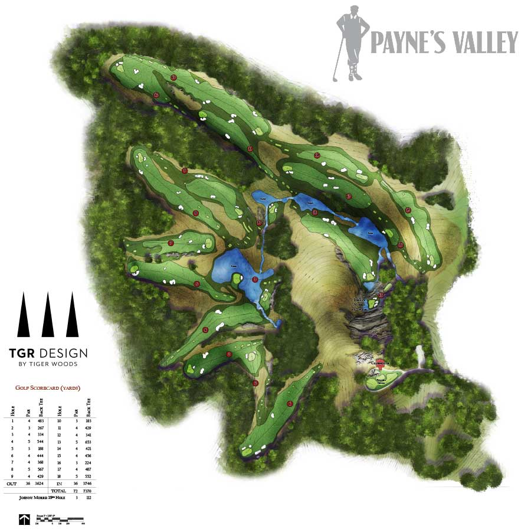

About Payne's Valley
Payne's Valley Golf Course, designed by Tiger Woods, is a stunning 18-hole course nestled in the heart of the Ozark Mountains. It offers a unique golfing experience with breathtaking views and challenging play for golfers of all skill levels.
The course is named after Payne Stewart, a legendary golfer known for his sportsmanship and skill. It features natural terrain, rolling hills, and scenic water features that enhance the overall experience.
Whether you're a seasoned golfer or a beginner, Payne's Valley provides an unforgettable experience in a beautiful setting.
Courses Offered

- 18-Hole Championship Course: A challenging course designed to test your skills with a variety of holes, including water hazards and bunkers.
- 9-Hole Executive Course: A shorter course perfect for beginners or those looking for a quick round of golf.
- Practice Facilities: State-of-the-art driving range, putting greens, and chipping areas to help you improve your game.
Contact Us
If you have any questions or would like to book a tee time, please contact us:
- Phone: (123) 456‑7890
- Email: info@paynesvalley.com